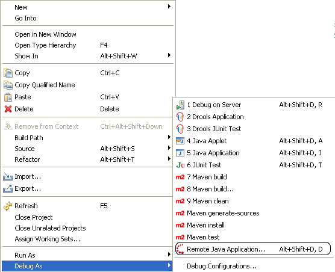
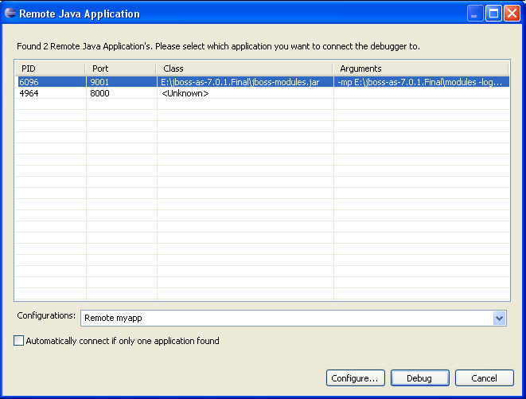
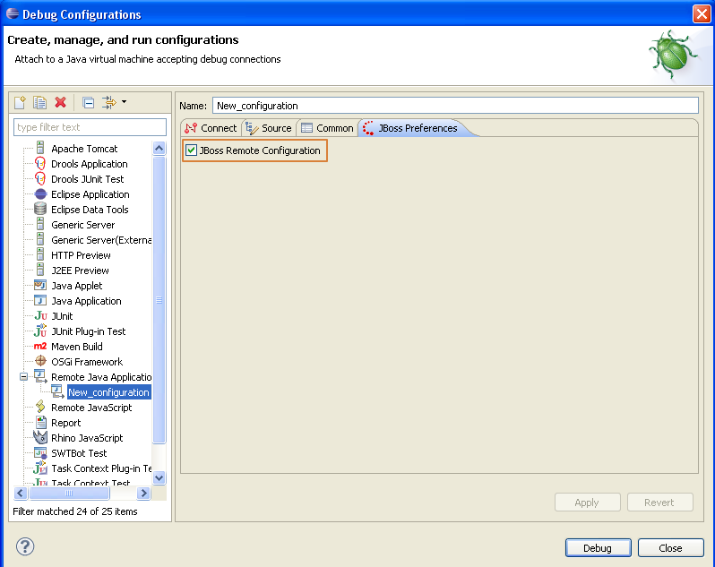

|
Now JBoss Tools supports discovering and debugging remote Java
applications running on an hotspot enabled JVM.
This feature allows you to connect the Eclipse Java Debugger
to any running Java application without having to configure
Eclipse to use the right port and source attachements. This
feature will do that work for you, making it super easy to
remote debug any java application with full source navigation in
your loaded Eclipse projects.
To use it you right-click one or more Java projects in the workspace and call
an action to discover Remote Java applications started in the debug mode.

Note: To be able to detect these remote applications you need classes in the package
sun.jvmstat.monitor.* which are only provided by
Sun/Oracle based JVM's like the standard JVM/JDK and
OpenJDK. The feature should work on all common JDK
distributions but if you use some custom JDK distribution it
might not work. For OSX these classes are included in the normal
JavaVM, but on other operating systems you will need to ensure
a full JDK with tools.jar is used when running Eclipse.
The selection of projects is important since it tells JBoss Tools
which projects you wish to have added as source projects for the
remote Java application.
Once you select "Remote Java Application..." the scanning
commmences, normally this should go fast but if you have alot of
java applications or one of them are waiting for a debugger to
attach the search can take a while. Eventually, if there are remote Java applications on your localhost, a dialog as shown below will appear:

In this case the application with PID 4964 is started with the
'suspend=y' option. In this case, JDK can determine only the
application's PID and port and not any info about class and
arguments (because the JVM is suspended/not fully started).
In the bottom of the dialog a combobox allowing you to choose
between Configurations are shown. JBoss Tools will create one
automatically based on the selection but if you have some
customization you wish to you can do that and just ensure the
"JBoss Remote configuration" preference is checked on your own
custom launch configuration
If that preference is set, it will be included in the list of
possible Configurations and every setting beyond the host/port
numbers will be reused. This allow you to customize your launch
configurations as you wish to for repeated launches.

The JBoss Remote Java Application supports the following features:
- Discovers remote applications running on the local host (not external hosts)
- all selected projects will be included in the source
attachment for the project
- if you have m2e installed, Maven dependencies for all the selected projects will be resolved
and included in the source attachment
(m2e supports this functionality only for Java application, JUnit and TestNG launch configurations)
- The user can create Remote Java Application launch configurations containing user specific source attachments
Related Jira
|